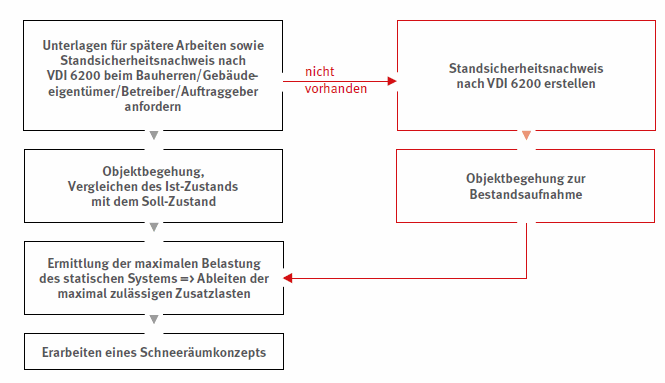
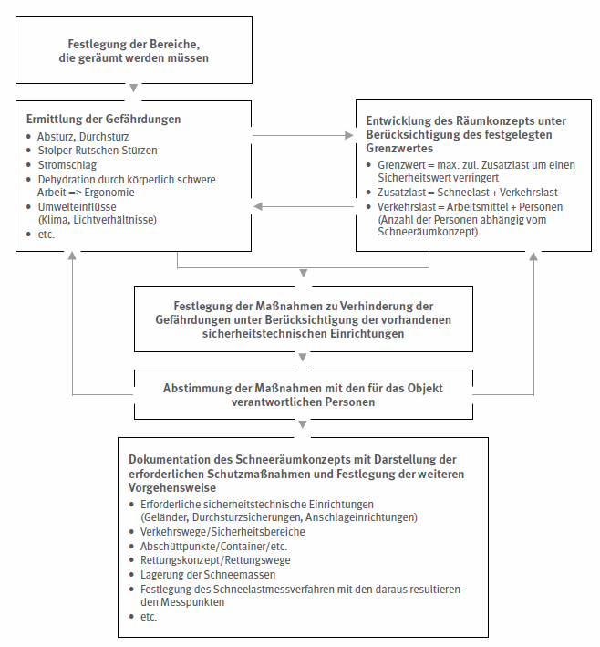
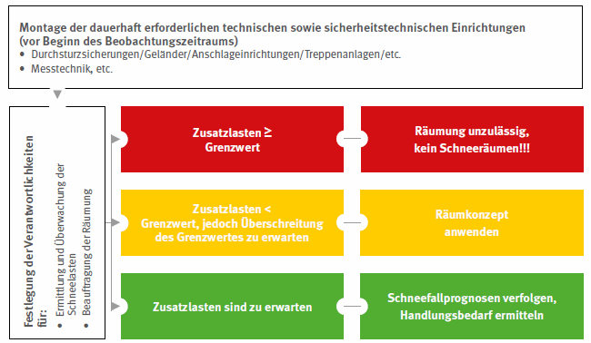
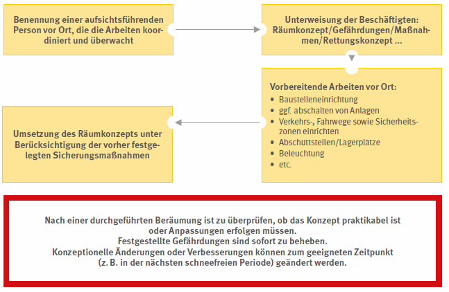

Spontane Räumungsarbeiten auf unsicheren Dächern sind mit hohen Risiken verbunden und deshalb unzulässig. Deshalb muss eine Räumung sorgfältig geplant werden.
Im nachfolgenden Ablaufschema wird die Vorgehensweise bei einer nachträglichen Erstellung eines objektbezogenen Schneemanagement beispielhaft dargestellt. Das objektbezogene Schneemanagement besteht aus drei Stufen:
| Stufe I : | Objektanalyse |
| Stufe II : | Erstellung eines Schneeräumkonzepts |
| Stufe III : | Umsetzung |

Abb. 21 Stufe I des Schneemanagement

Abb. 22 Stufe II des Schneemanagement

Schneeräumung

Abb. 23 Stufe III des Schneemanagement